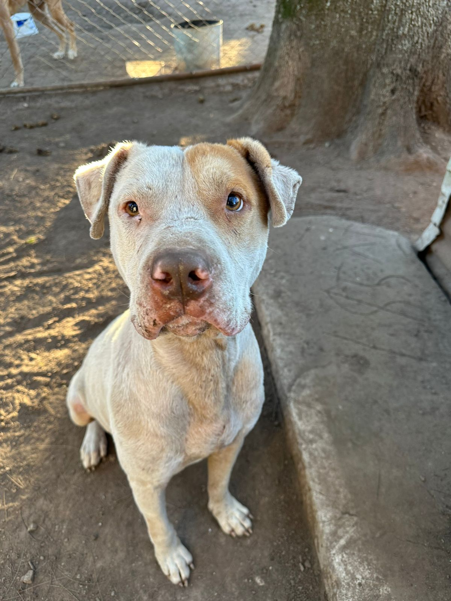
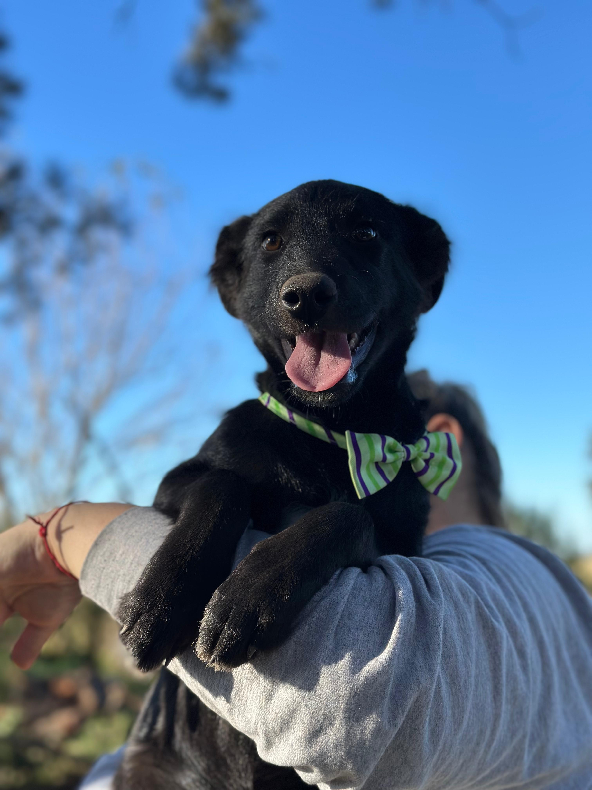
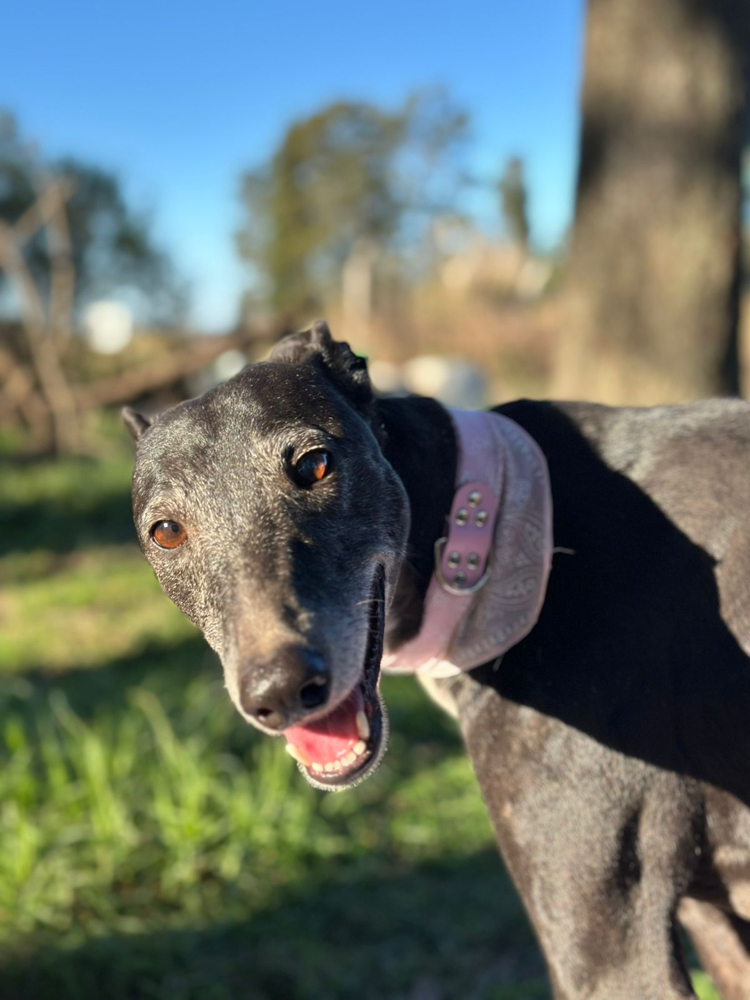
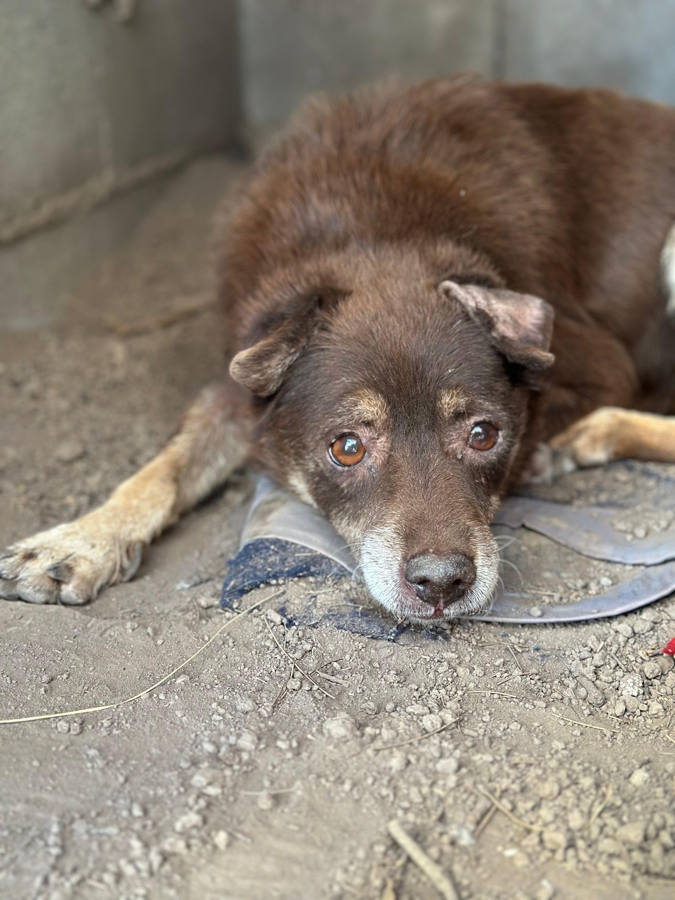
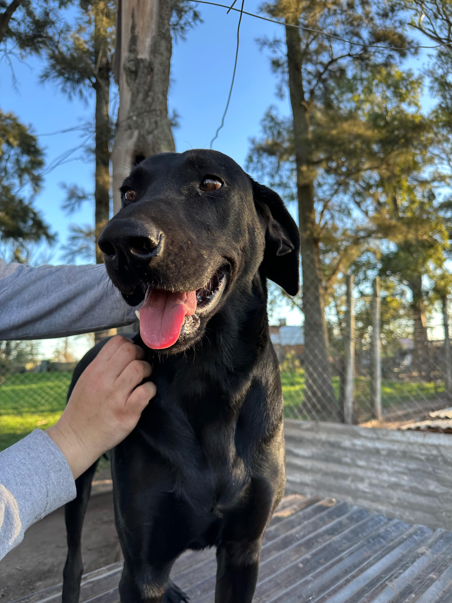
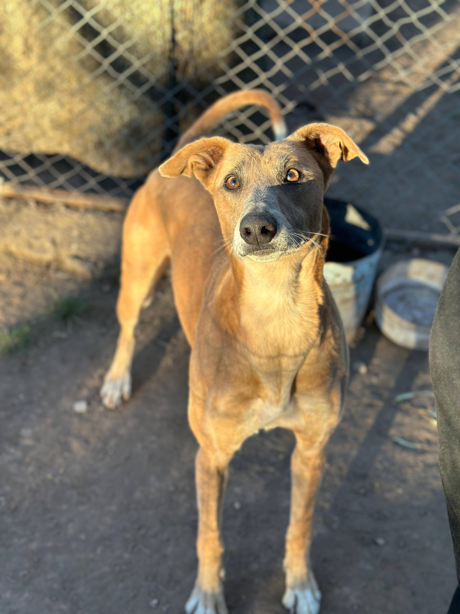
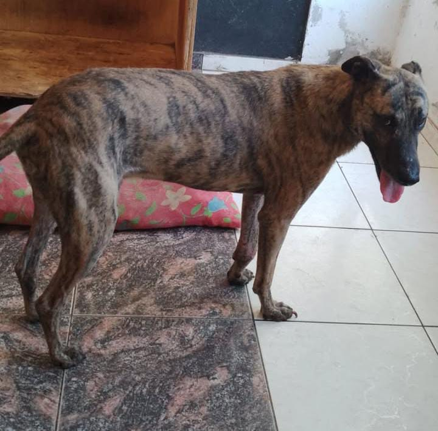
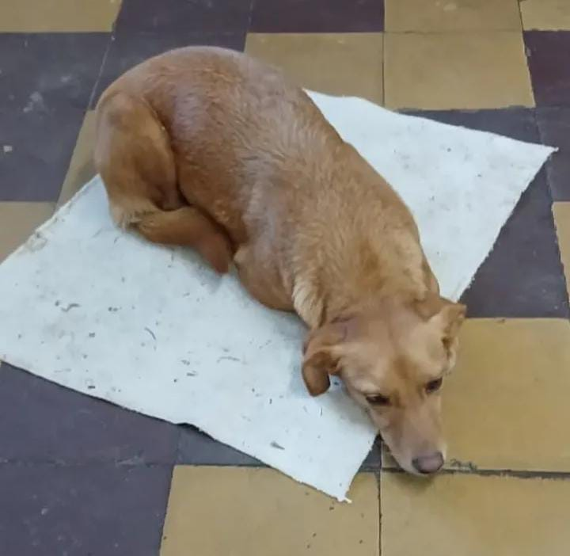

Rayo
6 años - Macho
Busca un hogar sin otros animales

Teo
3 meses - Macho
Tamaño mediano. Rescatado del basural junto a sus hermanitos.

Uma
7 años - Hembra
Galga amorosa. Castrada. Se lleva bien con otros animales. Rescatada en octubre 2024.

Fresa
8 años - Hembra
Necesita paciencia y amor. Quedó en la calle tras perder a su mamá humana.

Oreo
Macho
Tamaño grande XXL. Amoroso. No convive con gatos.

Milanesa
6 años - Macho
Cariñoso. Se lleva bien con hembras.

Muñeco
Mestizo, cruza con galgo - Tamaño grande
Súper protector. Idealmente necesita un campo o casa con un patio amplio donde correr.

Nina
Hembra - Tamaño chico
Nina es una perrita pequeña, cariñosa y juguetona, ideal para un hogar con mucho amor.

Dulce
10 años - Hembra
Galguita abandonada con sus 12 cachorros en la calle.